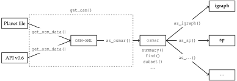
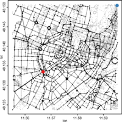
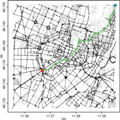
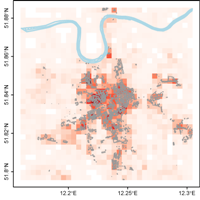

The osmar package provides infrastructure to access OpenStreetMap data from different sources, to work with the data in common R manner, and to convert data into available infrastructure provided by existing R packages (e.g., into sp and igraph objects).




The stable version of osmar is available on CRAN; issue the following from within R to install and load it:
R> install.packages("osmar")
R> library("osmar")
See the R-Journal article for a comprehensive introduction; a preprint is available here.
navigator: Simple routing demo using the igraph-package.
R> demo("navigator")fossgis2012: Examples of the FOSSGIS 2012 presentation in Dessau (Germany).
R> download.file("http://osmar.r-forge.r-project.org/fossgis2012.R", + "fossgis2012.R")Open file with internal editor:R> edit(file = "fossgis2012.R")And execute each line CTRL+R.
Watch the video of the talk (in German)!
| [1] | Manuel J. A. Eugster and Thomas Schlesinger. osmar: OpenStreetMap and R. R Journal, Volume 5/1, June 2013. [ bib | PDF ] |
The development version is available on R-Forge.